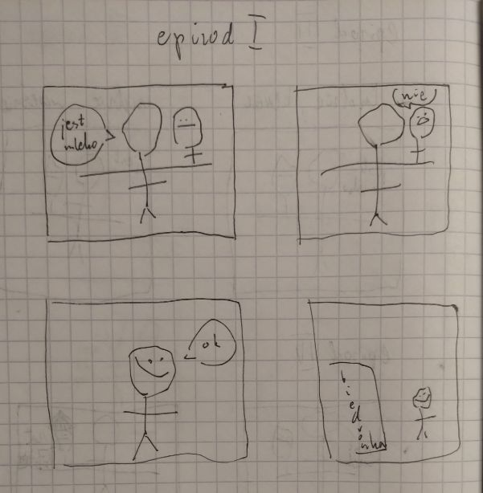
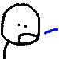

Bob Mleczarz
Witaj na oficjalnej stronie Boba mleczarza.
Ta witryna ma na celu publikowanie komiksu o skomplikowanej fabule tworzonego przez Bald2beMan od stycznia 2022 roku. Pierwsze szkice pojawiły się w zeszycie od fizyki. W kodzie strony pomagał Skibi, a w fabule wspiera Pablo. Polecam przeczytać całość, bo można nie ogarniać co się dzieje.
Epizody wychodzą nieregularnie. Kiedy mam ochotę to je robię. Oparte są na różnorakich żartach wymyślonych przez lata, lub prawdziwych wydarzeniach.
Aby zacząć zanurzać się w uniwersum Boba kliknij na zakładkę komiks. Reszty dowiesz się na wcześniej wspomnianej stronie.
Najpierwszy epizod Boba


Miłego czytania!